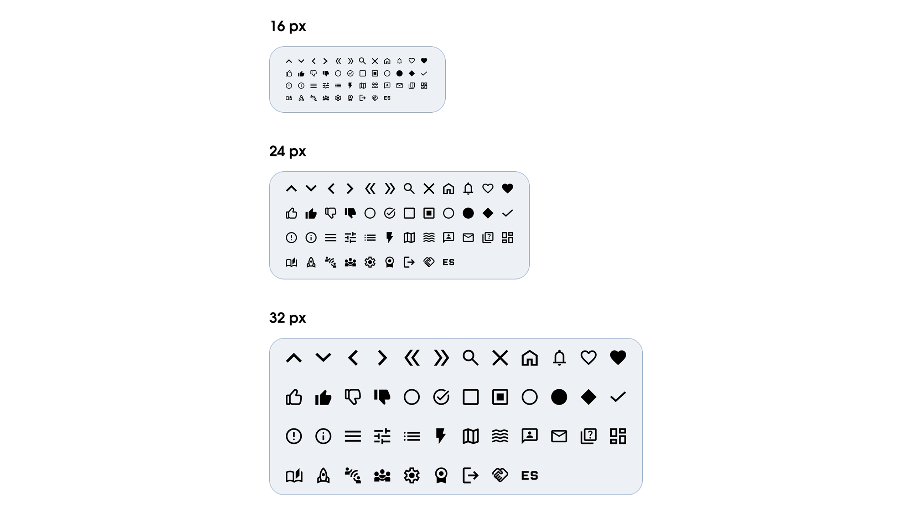

Le icone che ho scelto riprendono in gran parte quelle originali di Acumen Academy, integrandole dove necessario con soluzioni simili o nuove aggiunte personali.
Oltre alla funzionalità e riconoscibilità, mi sono concentrata anche sulla coerenza visiva, creando una griglia dedicata per creare formati standard da 16, 24 e 32 pixel, così da garantire uniformità in tutta l’interfaccia.